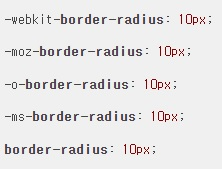

밴더 프리픽스란?
CSS는 아직
'웹 표준'
정해지지 않았다.
그렇기 때문에 브라우저에 따라 다른 방식으로 지원된다.
그래서 CSS를 모든 브라우저에서 원활히 사용하기 위해서는
Prefix(접두사)
를 붙여주어야 한다.
각 브라우저 별 밴더 프리픽스는 다음과 같다.
사파리, 크롬 : -webkit-
모질라, 파이어폭스 : -moz-
오페라 : -o-
익스플로러 : -ms-
스타일 속성 앞에 오른쪽 사진과 같이 프리픽스를
넣어주면 브라우저 별로 균일하게 표현해낼 수 있다.

출처